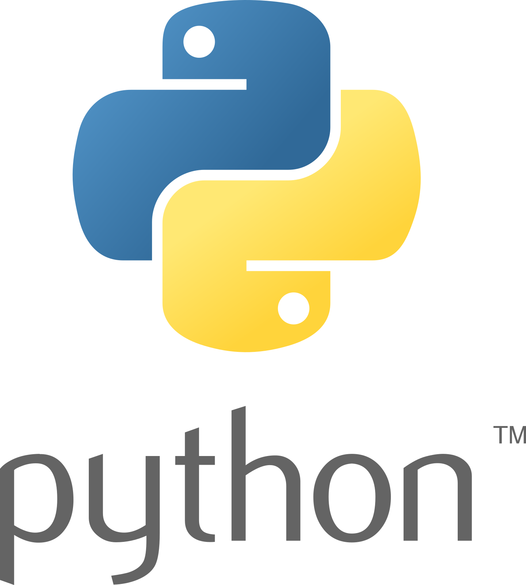
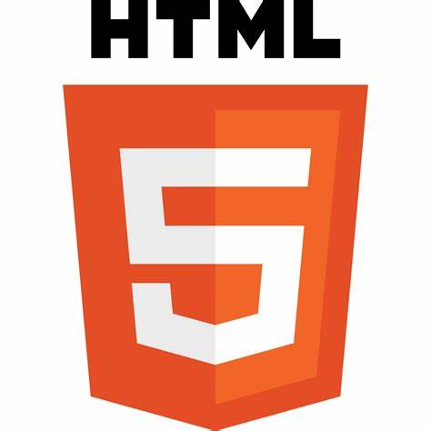
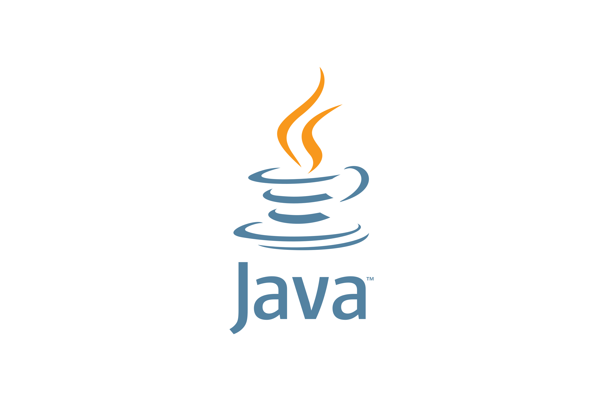

Python is a high-level, interpreted programming language known for its simplicity and versatility. Created by Guido van Rossum and first released in 1991, Python emphasizes code readability and ease of use, making it popular among beginners and experienced developers alike. Its extensive standard library and thriving ecosystem of third-party packages support various applications, from web development and data analysis to artificial intelligence and scientific computing. Python's clean syntax, dynamic typing, and automatic memory management contribute to its efficiency and productivity. It's widely used in industries like technology, finance, academia, and beyond, cementing its status as one of the most influential programming languages.
HTML (Hypertext Markup Language) is the standard markup language used to create web pages and applications. Developed by Tim Berners-Lee in the late 1980s, HTML provides the structure and content of web documents, defining elements such as headings, paragraphs, links, and images. It uses a system of tags surrounded by angle brackets to annotate text, indicating how it should be displayed in a web browser. HTML works seamlessly with other web technologies like CSS (Cascading Style Sheets) and JavaScript to enhance presentation and interactivity. As a foundational skill for web development, HTML continues to play a crucial role in shaping the online world.
JavaScript is a versatile, high-level programming language primarily used for web development. Developed by Brendan Eich in 1995, JavaScript allows for dynamic, interactive behavior within web pages. It runs on virtually all modern web browsers and can be integrated with HTML and CSS. JavaScript facilitates tasks such as DOM manipulation, event handling, and asynchronous communication, enabling the creation of responsive and feature-rich web applications. Its flexibility extends beyond the web, with frameworks like Node.js enabling server-side development. JavaScript's widespread adoption, extensive libraries, and active community make it a cornerstone of modern web development, powering interactive experiences across the internet.
Java is a versatile, object-oriented programming language renowned for its platform independence and robustness. Developed by James Gosling at Sun Microsystems in 1995, Java's "write once, run anywhere" philosophy allows programs to run on any device with a Java Virtual Machine (JVM). Its syntax is similar to C++, making it accessible to many developers. Java finds extensive use in enterprise software, mobile applications (Android), web development, and large-scale systems. Its strong emphasis on security, automatic memory management, and extensive standard library contribute to its popularity and reliability. Java's enduring presence in the tech industry underscores its importance and widespread adoption.
C++ is a powerful, general-purpose programming language known for its efficiency, flexibility, and performance. Developed by Bjarne Stroustrup at Bell Labs in the 1980s, it builds upon the syntax and features of the C programming language while introducing object-oriented programming (OOP) concepts. C++ supports low-level memory manipulation and high-level abstractions, making it suitable for systems programming, game development, embedded systems, and more. Its extensive standard library and strong community support contribute to its popularity. Despite its complexity, C++ remains a cornerstone of modern software engineering, favored for its combination of speed, control, and expressiveness in demanding applications.